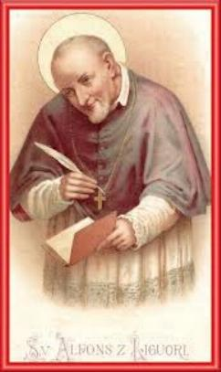
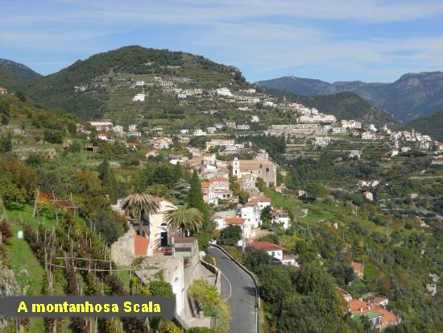
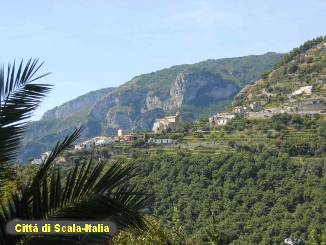
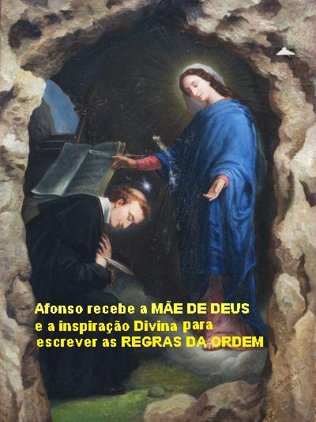
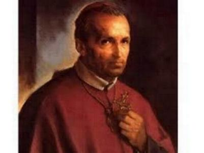
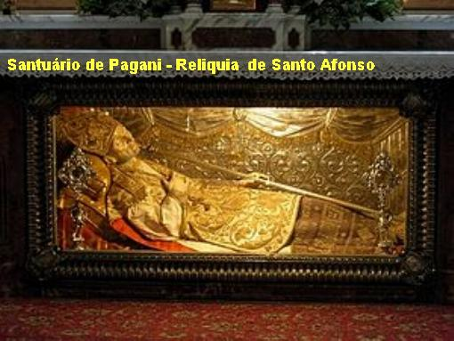

FUNDA��O
DA CONGREGA��O
REDENTORISTA
ENCARREGADO DA IGREJA
At� ent�o, Padre Afonso Maria
vivia na casa dos seus pais, e suspirava por poder experimentar mais de perto a
solid�o de um Convento. Tem uma imensa
e insaci�vel sede de
DEUS, e para suaviz�-la precisava de mais recolhimento e mais ora��o. Em 1729, pediu
permiss�o ao seu pai para deixar a casa paterna, e foi morar no Instituto Chin�s,
uma esp�cie de Convento, e desta vez, o seu pai consentiu. Neste Instituto tinha
o Col�gio da Sagrada Fam�lia, onde foi residir na companhia de um grande
mission�rio seu amigo: Padre Mateus Ripa.
No Convento, Afonso fez uma
profunda experi�ncia de DEUS. Vivia em extrema pobreza, alimentando-se muito mal
por penit�ncia, dormindo pouco e sobre uma taboa nua, e passando a maior parte
da noite em ora��es.
Ele � o encarregado da Igreja,
como se fosse o Vig�rio, e ent�o, o Templo se transformou num centro de piedade
profunda e de sinceras convers�es. Ali, Padre Afonso experimentou uma das
maiores alegrias da sua vida: a convers�o do seu pai. O senhor Giuseppe passou a
rezar muito, confessava-se com frequ�ncia e com o pr�prio filho, e participava
ardorosamente da Sagrada Eucaristia.
Por outro lado, cada dia que
passava, todos percebiam que a sa�de do Padre Afonso Maria estava definhando
visivelmente. Seus pais e os superiores come�aram a se preocupar com o fato. Mas
ele continuava teimando em fazer os seus excessos no trabalho, na penit�ncia e
nas ora��es.
Alguns Padres amigos
convenceram-no h� repousar um pouco, passando uma temporada fora. E inclusive,
alguns foram com ele para a cidadezinha de Scala, hospedando-se numa ermida
chamada Santa Maria dei Monti.
UMA CIDADE CHAMADA SCALA
Era uma regi�o maravilhosa e ele
sa�a andando pela redondeza para aspirar o ar puro das montanhas. Dava aten��o a
todos que encontrava pelo caminho.
Scala era habitada por muitos
cabreiros que se dedicavam � cria��o de ovelhas. Tamb�m l� havia grande n�mero
de camponeses. Perceberam a bondade de Padre Afonso e passaram a seguir os seus
passos, visitando sua casa. Eram totalmente ignorantes em tudo. Queriam que
Padre Afonso os ensinasse a rezar, pois queriam aprender sobre DEUS e sobre
NOSSA SENHORA. E Padre Afonso os ensinava. Cada dia aumentava mais o n�mero das
pessoas que frequentava, e em pouco tempo j� era uma multid�o de cabreiros e
agricultores, vindos de todos os recantos, �vidos de conhecer DEUS.
Esse fato marcou indelevelmente
a espiritualidade, o minist�rio e a vida de Padre Afonso Maria, que o conduziu a
meditar diariamente nesse drama daquelas pessoas, tentando encontrar alguma
coisa para fazer por eles.
Um dia, mergulhado em DEUS, teve
uma id�ia: �Por que n�o
congregar um grupo de sacerdotes, para se dedicarem unicamente �queles t�o
tristemente abandonados?�
UMA VIS�O QUE
TROUXE LUZ

Tamb�m
havia em Scala um Convento de Religiosas das Irm�s do Sant�ssimo Salvador. Eram
Religiosas fervorosas, mas, no momento, passavam por uma crise, porque reinava divis�o
na Comunidade em consequ�ncia de d�vidas e discuss�es sobre a Regra (Estatuto) da
Comunidade que deveriam seguir. O senhor Bispo de Scala pediu ao Padre Afonso
para pregar um Retiro Espiritual para elas. Ele que veio para descansar!... Mas
Padre Afonso Maria n�o sabia dizer
�n�o�.
Ciente do que
estava acontecendo, convidou as religiosas a se manifestarem com sinceridade.
A primeira a falar foi a Irm� Maria Celeste Crostarosa. Ela teve uma vis�o h�
poucos dias e come�ou a relatar:
- �Vi um
grupo grande de sacerdotes, que se dedicavam unicamente � evangeliza��o das almas
mais abandonadas. � frente desses Padres estava o senhor Dom Afonso�.
Quando ela terminou
o Padre Afonso Maria estava profundamente emocionado: evangelizar os mais abandonados...
Era exatamente a mesma id�ia (inspira��o) que tivera em Santa Maria dei Monti!
Coincid�ncia? Mas quem faz as coincid�ncias? E porque a Irm� usou a express�o
�Dom Afonso�?
Padre Afonso Maria
reorganizou o Convento das Irm�s, dando-lhes novas Regras e elas continuaram o caminho
de sua exist�ncia em paz. Ainda hoje existem e s�o conhecidas por Irm�s Redentoristas,
e consideram que o Padre Afonso Maria � o seu fundador.
Mas a vis�o daquela Irm�
n�o saia mais da cabe�a do Padre Afonso, porque tamb�m coincidiu com sua inspira��o,
al�m de esbo�ar um lindo caminho para a sua espiritualidade. E por isso,
procurou diversas autoridades, membros de outras Ordens Religiosas, porque
queria ouvir a opini�o deles sobre os fatos acontecidos, e as respostas, depois
de muitas ora��es, eram un�nimes: �DEUS quer que o senhor seja o fundador de uma Obra que se consagre
� salva��o dos mais abandonados�.
A VONTADE DE DEUS
Afonso voltou a N�poles,
ao Col�gio da Sagrada Fam�lia e entregou-se � profunda ora��o e � reflex�o durante
v�rios dias. Isto porque, da mesma forma que muitos apoiaram a sua iniciativa,
muitos tamb�m o criticaram, e ele se sentiu de certo modo perdido, necessitando
de um arrimo mais forte, para se empregar totalmente na nova Obra. E tanto ele
rezou e pediu, que DEUS NOSSO SENHOR, miseric�rdia infinita enviou-lhe um sinal
poderoso: a cura miraculosa de uma religiosa gravemente enferma. Ent�o ele se
firmou na id�ia. A Vontade de DEUS se fez clara e inquestion�vel. Conversou com
o seu companheiro, Padre Mandarini, que ficou entusiasmado com todos os fatos
ocorridos e descritos, e imediatamente apoiou a Obra do Padre Afonso Maria.
Agora j� s�o dois.
Aproximou-se o dia
do Padre Afonso Maria deixar N�poles para fundar uma Congrega��o. Seu pai est� triste
e contrariado com a decis�o do filho. � tardinha, Padre Afonso chegou a casa para
descansar um pouco. Seu pai ouviu os seus passos entrando no quarto foi ao
encontro dele e perguntou:
- �Afonso, meu
filho, � certo que vais abandonar o teu velho pai? � certo, meu filho?�
Foi uma dura prova��o
para ele, as palavras do seu pai foram como punhaladas em seu cora��o. Mas disfar�ando
a sua dor, respondeu:
- �Sim, papai! DEUS
o quer�.
O senhor Giuseppe agarra-o
de novo, mais forte e aperta-o contra o seu peito. Era, sem d�vida, a despedida do
seu filho.
Um tanto nervoso e intranquilo
Padre Afonso deixou rapidamente a casa, n�o se despediu de ningu�m, n�o olhou
para tr�s, porque n�o queria que a cena se repetisse. Estava com 36 anos de
idade e seis anos de sacerd�cio. O destino � Scala.
ALICERCES DA
CONGREGA��O
Chegou a Scala no
dia 8 de Novembro de 1732, e foi para o Convento que o senhor Bispo lhe dera. N�o
tem nenhum luxo, possu�a tr�s dormit�rios
pequenos, uma saleta para
reuni�es, um pequeno orat�rio, um banheiro WC, uma cozinha e uma copa. A mob�lia � mais
pobre ainda, tendo algumas cadeiras j� velhas e desconjuntadas, colch�es tamb�m velhos
e estragados, panelas e pratos de barro. A pobreza � grande e a mis�ria maior.
Ali j� est�o esperando os seus companheiros e amigos, s�o sete, todos eles
homens de virtudes e de valor incontest�vel, dispostos a seguir o chefe.
Dia 9 de Novembro
de 1732 � o dia t�o esperado, Padre Afonso e seus companheiros v�o a Catedral. Assistem
a Santa Missa do ESP�RITO SANTO, e assim nasce uma nova Congrega��o Religiosa. O
padroeiro � NOSSO SENHOR JESUS CRISTO e o nome: Congrega��o do Sant�ssimo
Salvador. Mais tarde o Papa Bento XIV mudou esse nome para
�Congrega��o do Sant�ssimo Redentor�
. E para comemorar a funda��o
da Nova Ordem Religiosa, os Padres fazem tr�s dias de retiro espiritual, rezam muito
inclusive fazem muitas penit�ncias, para implorar o aux�lio, as gra�as e as b�n��os
de DEUS sobre a nova funda��o.
AS DIFICULDADES
DE UMA GRANDE OBRA
Mas, como em toda obra,
no seu in�cio Padre Afonso teve s�rias dificuldades, pois seus pr�prios amigos o
criticavam pelo fato dele deixar N�poles e sair para uma regi�o desconhecida,
com o objetivo de fundar uma Ordem Religiosa. Foi chamado de vision�rio louco e
outros apelidos.
Mas a luta maior era
junto dos seus membros, ele teve que empreender um not�vel esfor�o, para organizar
e fazer com que a nova Congrega��o trilhasse um caminho que satisfizesse o seu esp�rito.
Isto porque os primeiros Redentoristas j� estavam vivendo em Comunidade, mas sem
nenhum Regulamento escrito, o comportamento era ditado pelo procedimento dos
mais antigos e do pr�prio fundador. Embora fossem pessoas adultas e com
experi�ncia de vida, era necess�rio haver o di�logo entre eles, com objetivo de
harmonizar o procedimento, e tamb�m, a fim de permitir estabelecer regras
compreens�veis ao entendimento e a aceita��o de todos. O di�logo e as consultas
come�aram, mas, desde o inicio, come�ou a surgir uma divis�o entre eles.
Logo na primeira
reuni�o todos est�o de acordo num ponto: �A Congrega��o ser� essencialmente mission�ria, e seus sacerdotes dever�o
se dedicar, especialmente, �s almas mais abandonadas.� E os outros tipos de trabalho? Est�o todos exclu�dos? A�
� que aconteceu a divis�o. Diversos membros queriam que a Congrega��o n�o extinguisse
a possibilidade dos seus sacerdotes trabalharem em Par�quias, em Escolas e tamb�m
nas outras diversas formas de Apostolado.
Havia tamb�m outras
discord�ncias: uns queriam mais austeridade de vida, outros achavam que j� havia
muita austeridade; uns queriam pobreza e penit�ncias extremas, al�m de muita
ora��o; outros queriam um meio termo.
A reuni�o foi
interrompida para reflex�o.
Padre Afonso
Maria foi consultar os seus conselheiros particulares, que recomendaram
�firmeza� na decis�o. Ent�o ele usou de firmeza, isto porque, desde
as manifesta��es sobrenaturais estava decidido que �a Congrega��o devia ser �nica e exclusivamente
mission�ria�, e por isso mesmo,
ele n�o abriu m�o desta determina��o. O resultado � que dos sete companheiros, ficaram
apenas dois: Padre C�sar Sportelli e o Irm�o Coadjutor Vitor C�rzio, os outros cinco
companheiros abandonaram a Congrega��o. Afonso ficou arrasado, mas n�o desanimado.
O Bispo de Castellamare que simpatizava com sua obra tamb�m ficou desapontado, mas
n�o perdeu a tranquilidade e animou Padre Afonso Maria a continuar firme na luta.
Isto porque, verdadeiramente ele tinha que come�ar o seu trabalho como recebeu a
inspira��o Divina. Depois, na sequ�ncia dos anos seria perfeitamente normal,
oportuno e construtivo, que a Ordem Religiosa exercitasse tamb�m outros
tipos de apostolado, que fossem da conveni�ncia da Organiza��o.

A LUTA N�O PODE PARAR
Afonso, na sequ�ncia
dos dias, sentiu uma terr�vel solid�o e o des�nimo esmagava a sua vontade de reagir.
Triste e abatido entrou na Capela do Convento e se ajoelhou diante do Sacr�rio.
E junto de NOSSO SENHOR desabafou as suas m�goas, falou das difama��es, das
cal�nias, das ca�oadas, do abandono daqueles que antes o admirava e falou
tamb�m da enorme solid�o que o deixaram seus cinco amigos e co-fundadores da
Ordem. Suas l�grimas desciam pela face e o seu cora��o pulsava forte. Depois das
palavras, olhando sempre para o Sacr�rio rezou fervorosamente.
E CRISTO, bondade
infinita derramou um caudaloso b�lsamo no seu esp�rito, tranquilizando o seu corpo,
infundindo coragem e alegria ao seu cora��o. Padre Afonso Maria entendeu que
devia continuar o seu trabalho, sacudir a poeira do des�nimo e marchar firme com
f� e esperan�a.
Os desertores quinze
dias depois voltaram e queriam que Padre Afonso Maria os aceitasse novamente. Mas
ele foi inflex�vel, s� aceitaria os cinco de volta, se eles n�o conservassem as
id�ias anteriores.
A Congrega��o continuou
pequena, com os seus tr�s membros: Padre Afonso, Padre C�sar e Irm�o Vitor.
Todavia n�o demorou
muito surgiu mais um, o Padre Janu�rio Sarnelli, filho de um famoso Bar�o. E embora,
sendo um pequeno grupo, partiram para a a��o. Em pouco tempo evangelizaram Ravello,
Raito, Benincasa, S�o L�zaro, C�mpoli e Pomerano. E desse modo a Congrega��o venceu o
seu primeiro ano de vida.
E como frutos das miss�es
surgiram �s primeiras funda��es, e junto com elas, novos companheiros e
confrades.
A FUNDA��O VILA DOS
ESCRAVOS
A primeira funda��o
foi a de Vila dos Escravos. Quando chegaram foram recebidos com muita alegria e festa.
O Padre Xavier Rossi, um dos entusiastas desta funda��o, logo entrou para a
Congrega��o.
Em Scala, Padre Afonso
abriu o primeiro Noviciado da Congrega��o sob a orienta��o do Padre C�sar Sportelli.
As voca��es foram se multiplicando e Scala j� era pequena para abrigar tantos
interessados. Vila dos Escravos tamb�m n�o � suficiente. Padre Afonso cheio de
ideal e com muita energia partiu para abrir outras funda��es. Surgiram as Casas
de Ciorani, Nocera, Iliceto e Caposele.
A miss�o � tudo
para Padre Afonso! Quase todos os dias ele � encontrado nas estradas, com os
seus mission�rios, evangelizando de cidade em cidade, de lugarejo em lugarejo,
ensinando e levando a palavra de DEUS. A viagem � sempre a p�. S� quando n�o �
poss�vel � que ele e os mission�rios usavam cavalos. Sempre vestidos pobremente,
com batinas remendadas, mas limpas, usando Ter�os e livros de ora��es. E nas
miss�es, nas localidades que visitavam ningu�m era esquecido, nem os doentes e
nem os presos. O importante na miss�o era a evangeliza��o, porque justamente ela
� que culminava com a convers�o do cora��o dos ouvintes. Por isso, o atendimento
as Confiss�es era algo muito s�rio, e os mission�rios ficavam horas e horas
atendendo a todos os fieis. Padre Afonso Maria era o primeiro a entrar no
Confession�rio e o �ltimo a sair. As prega��es eram diretas, ou seja, em estilo
simples e access�vel ao mais ignorante. Al�m dos outros assuntos abordados,
havia dois temas principais: NOSSA SENHORA e a Ora��o.
� HORA DE REDIGIR
AS REGRAS
A Congrega��o crescia
rapidamente, Padre Afonso sentia que estava na hora de escrever as Regras para
normalizar e orientar a a��o dos Redentoristas. Na pequena cidade de Scala onde
estava a sede da Congrega��o, havia uma montanha que dominava a cidade e nela
existia uma gruta, que j� era do conhecimento dele, que a frequentou muitas
vezes para rezar, fazer mortifica��es e meditar. E tamb�m foi nesta gruta que
ele foi inspirado e recebeu preciosas visitas da M�E DE DEUS. Desse modo,
utilizou a gruta para escrever as Regras da Congrega��o e s� saiu de l� com elas
totalmente prontas.
Depois de escritas, as
Regras deviam ser aprovadas por Sua Santidade o Papa e pelo Rei de N�poles. E foi uma
opera��o extremamente demorada. Padre Afonso Maria rezou muito e sofreu bastante
durante anos, at� conseguir a total aprova��o das Regras da Congrega��o.
O GRANDE ESCRITOR
Em princ�pios de 1762,
enquanto as coisas assim caminhavam, com 66 anos de idade, se sentia esgotado, porque
trabalhava excessivamente e sofria demais. At� aquele dia sua
vida era agitad�ssima, mas n�o se lamentava. Assim, a bem da sua sa�de,
precisando diminuir o ritmo das atividades externas, decidiu se dedicar a
escrever, e escreveu muito, cerca de 200 obras. No seu livro de Teologia Moral
ele chegou a fazer mais de 70.000 cita��es. Por isso mesmo, hoje ele � Doutor da
Igreja e considerado c�lebre moralista.
demais. At� aquele dia sua
vida era agitad�ssima, mas n�o se lamentava. Assim, a bem da sua sa�de,
precisando diminuir o ritmo das atividades externas, decidiu se dedicar a
escrever, e escreveu muito, cerca de 200 obras. No seu livro de Teologia Moral
ele chegou a fazer mais de 70.000 cita��es. Por isso mesmo, hoje ele � Doutor da
Igreja e considerado c�lebre moralista.
BISPO DE SANTA
�GUEDA
Em Nocera, no dia
9 de Mar�o de 1762, Padre Afonso
�quase morreu de surpresa�. Foi
nomeado Bispo de Santa �gueda dos Godos. Chorou como crian�a porque desejava permanecer
apenas sacerdote. Tentou recusar oficialmente. O Papa Clemente XIII deu a impress�o de
ter ficado sensibilizado com as alega��es e argumentos dele. Por isso ele ficou
aguardando a resposta.
No dia 19 de Mar�o de 1762,
�s 18 horas, Padre Afonso Maria foi confirmado Bispo. Ele ficou perturbado, mas
ajoelhou e rezou: �Seja feita
a Vontade de DEUS�.
No dia 4 de Abril, ele
se despediu de Nocera e foi a Roma. No dia 20 de Junho de 1762, na Igreja de Santa
Maria �Supra Minervam�
, Padre Afonso Maria � sagrado Bispo.
Sagrado Bispo, foi se
despedir do Papa e pedir a b�n��o para si mesmo e para a sua Diocese. Depois que ele
se retirou, o Papa Clemente XIII comentou emocionado: �Ap�s a morte de Dom Afonso Maria Lig�rio, teremos
mais um Santo na Igreja�. E
o Papa n�o se enganou.
A entrada do Bispo
Dom Afonso Maria em Santa �gueda dos Godos foi o mais simples poss�vel, porque ele
n�o quis nenhum tipo de solenidade. Todos ficaram impressionados com a simplicidade
e a mod�stia dele. E sua primeira comunica��o ao povo foi direta e objetiva:
1 � No pr�ximo domingo
ter� in�cio uma miss�o geral para toda a cidade.
2 � Tamb�m haver� retiro
para o clero e para os nobres.
Foi assim que Dom Afonso
Maria estreou no episcopado. E na continuidade revelou em plenitude o seu esp�rito de
pobreza: n�o aceitava presentes de maneira nenhuma e por nenhum motivo, logo de
inicio rejeitou os vinhos, doces, frutas, licores, que as pessoas lhe ofertavam.
Tamb�m na mesa, para as suas refei��es, n�o aceitava os banquetes que lhe
preparavam e inclusive chamou a aten��o do Irm�o Romito que o acompanhara para
Santa �gueda: �N�o quero
banquetes enquanto muitos pobres morrem de fome�. E tamb�m, os C�negos que haviam lhe preparado
um quarto confort�vel, ele mandou tirar tudo e s� queria o seu �colch�o de
palha� (um colch�o duro).

HUMILDADE, SIMPLICIDADE E ENERGIA
No desempenho
da sua fun��o Dom Afonso foi impec�vel, exigente e defensor do direito e da
justi�a. Na sua simplicidade e mod�stia fazia surgir � grandeza de um car�ter
firme e decidido, com extremoso cuidado pelos que necessitavam, principalmente
com os pobres.
E n�o aceitava,
por menor que fosse, qualquer tipo de desordem ou arrua�as em sua Diocese. Enquanto
n�o via o mal extirpado sentia-se mal, perdia o apetite e o sono.
Apesar da idade avan�ada,
fazia fortes penit�ncias, rezava continuamente e mandava rezar para que essa ou aquela
desordem, que surgisse, desaparecesse da sua Diocese.
Durante o tempo do episcopado
escreveu muitos serm�es, livros e quase uma centena de artigos, para encorajar a devo��o ao
SANT�SSIMO SACRAMENTO e � VIRGEM MARIA.
DOM DA BI
LOCA��O
No dia 22 de Setembro
de 1774, Dom Afonso Maria agraciado pelo dom de DEUS, embora estivesse numa cadeira,
quebrado fisicamente pela doen�a e pela idade, foi espiritualmente transportado
at� Roma, e mais precisamente at� o Vaticano, no dia em que o Papa Clemente XIV
morria �s 7 horas da manh�, e presenciou todos os acontecimentos dos �ltimos
momentos da vida dele. L� na sua Diocese ele estava presente, permanecendo
corporalmente em Santa �gueda, silencioso, sentado naquela cadeira, sem falar,
sem comer, sem dar qualquer sinal de vida, dando a impress�o que dormia.
No dia seguinte,
logo cedo, acionou a campainha para chamar os seus auxiliares. Vieram correndo
e todos assustados perguntando-lhe; �O que aconteceu senhor Bispo? Estamos preocupados com o senhor,
pois desde ontem que o senhor est� im�vel nesta cadeira.�
Dom Afonso respondeu:
- �� verdade, meus
filhos, � verdade. Mas n�o estava dormindo. Eu estava em Roma assistindo ao Papa
que estava morrendo�.
Todos se assustaram
e nem todos acreditaram, imaginando que Dom Afonso estivesse caducando. Mas pouco
depois chegou a not�cia confirmando a morte do Papa.
APOSENTADORIA
POR DOEN�A E MORTE DE UM SANTO
Dom Afonso estava
doente e com idade bem avan�ada, atacado de paralisia que deformou o seu corpo de
maneira horr�vel, com o pesco�o acentuadamente inclinado para frente. J� havia pedido
diversas vezes para deixar a Diocese e nunca foi atendido. Certa vez o Papa
Clemente XIV lhe escreveu:
- �Basta que o
senhor governe a Diocese do leito em que DEUS o prendeu�.
Em 1775, o Papa
Pio VI que sucedeu ao Papa Clemente XIV, atendeu ao seu pedido de aposentadoria,
por motivo do agravamento da sua doen�a. Ele foi viver na Comunidade Redentora
de Pagani.
Dom Afonso Maria
deixou a Diocese de Santa �gueda no dia 27 de Julho de 1775, com 78 anos e 10 meses
de idade. Grande multid�o de pessoas estava � frente da sua casa, chorando,
acenando e cantando musicas religiosas. Ele tamb�m chorou. Deu a �ltima b�n��o
ao povo e viajou de carro de retorno ao Convento de Nocera dei Pagani.
Sua primeira provid�ncia
chegando ao Convento em Nocera, foi visitar o Sant�ssimo Sacramento. Prostrou-se
diante do Sacr�rio e rezou demoradamente. Ao terminar, disse:
�Meu DEUS, agrade�o-VOS por me terdes
livrado desta carga t�o pesada! Meu JESUS, eu j� n�o podia mais!�
Dom Afonso Maria ainda
viveu mais 12 anos, rezando muito, atendendo a todos que o procuravam, al�m de
pequenas viagens, visitando os Conventos
vizinhos a fim de
estimular os religiosos a perseverarem e continuarem fieis a miss�o.
Faleceu no dia 1� de
Agosto de 1787, com 90 anos e 10 meses de idade, entre os membros da sua Ordem Religiosa,
no Convento Pagani.
Sua fama de Santo se
espalhou por todos os lados, em face da sua eficaz e forte intercess�o junto a DEUS. O
SENHOR realizou uma quantidade not�vel de milagres pela suplica e intercess�o
dele.
Foi BEATIFICADO em 15
de Setembro de 1816, pelo Papa Pio VII, e foi CANONIZADO no dia 26 de Maio de 1839
pelo Papa Greg�rio XVI, em solene festa no Vaticano.
Mas sua glorifica��o
n�o havia terminado, porque ele � considerado um dos maiores e mais profundos escritores
eclesi�sticos, cujos livros, s�o fontes inesgot�veis da mais pura doutrina
crist�. Por essa raz�o, mais de 800 Bispos assinaram documentos solicitando a
Santa S� que lhe concedesse o t�tulo de �Doutor da Igreja�.
O Papa Pio IX, no dia 7 de Julho
de 1871 lhe concedeu o honroso titulo de
�Doutor Zelos�ssimo�, da Igreja de DEUS.
Em 1950 ele foi declarado
�Padroeiro dos Moralistas e dos Confessores�.
SUAS OBRAS
Escreveu 111 obras sobre
espiritualidade e teologia. A not�vel quantidade de 21.500 edi��es de suas obras, traduzidas
em 72 idiomas, comprovam que ele � um dos autores cat�licos mas lidos, at� o presente.
Tinha uma expressiva devo��o
mariana, e escreveu diversos livros, onde deixa evidente esta realidade: "As Gl�rias de MARIA"; "Devo��o Mariana"; Ora��es
� M�e Divina"; "Can��es Espirituais"; "A Verdadeira Esposa de CRISTO";
"As Visitas ao SANT�SSIMO SACRAMENTO e a VIRGEM MARIA", e outras.
Mas tamb�m, se faz necess�rio
real�ar a imensa contribui��o que ele deu a Igreja no campo da teologia moral, com o seu not�vel
e minucioso livro "Teologia Moral"
, onde cria um sistema admir�vel,
fundamentado na prud�ncia, evitando tanto o relaxamento como o rigor excessivo no viver
de uma organiza��o respons�vel.

Pr�xima P�gina
P�gina Anterior
Retorna ao �ndice